The project illustrates an attempt to rejuvenate a slaughterhouse
into an animal/ human resort in a future era when the differences
between virtual reality and reality are indistinguishable and humans no
longer require meat for nutrition intake.
The slaughterhouse represents
the permanent quality in architecture and how architecture has the
ability to withstand time tangibly. Yet, the special characteristics of the
time period have predetermined that tangibility is not the only form of
reality. Moreover, the rejuvenation process incites the contemplation
of whether the built structure with long lifespans is necessary or just
another form of imprisonment, since the lingering spirit continuously
evoking the detrimental association to brutality and death.
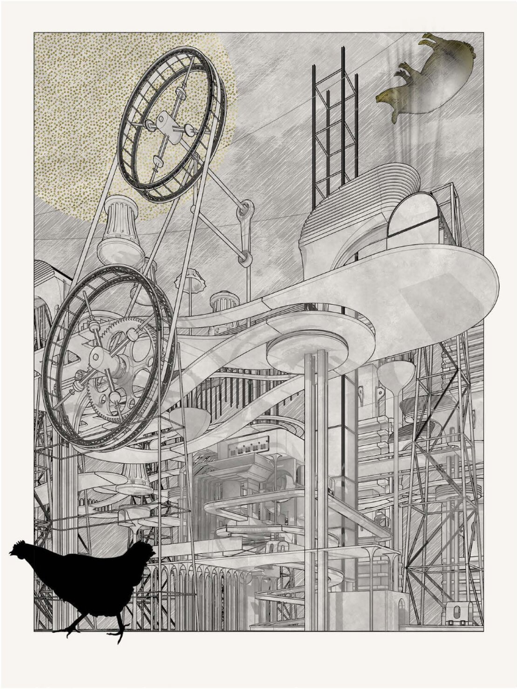
This is a representational drawing that examines the situation of chicken and other animal running loose.
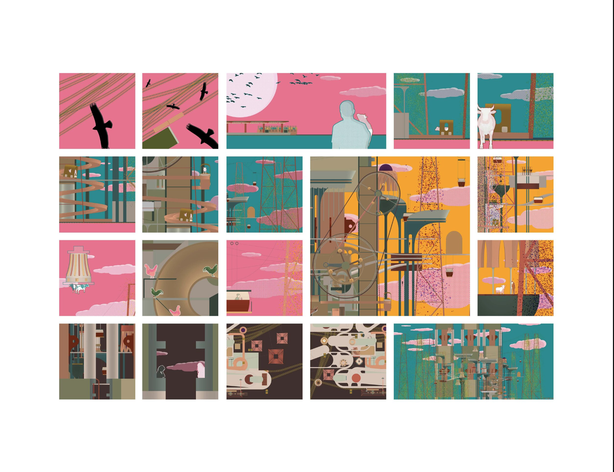
This comic style drawing demonstrated a life of people finding entertainment in a park that is filled with abandoned animals.
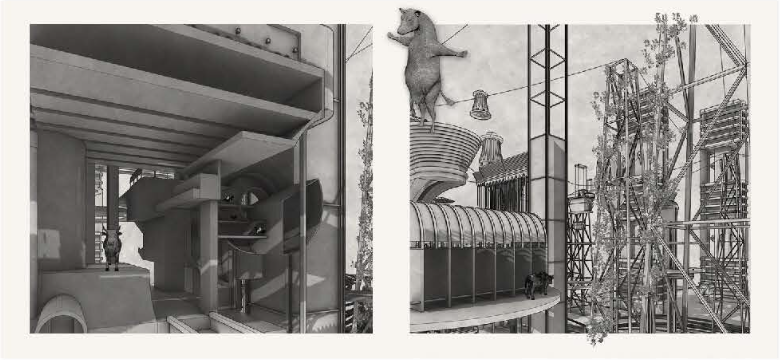
This is a drawing that showcases the life of the bandoned cow in the park.
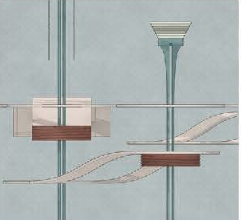
This is a digital detail 1 representing of the view of the normal human beings in the age of AI.
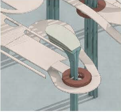
This is a digital detail 2 representing of the view of the normal human beings in the age of AI.
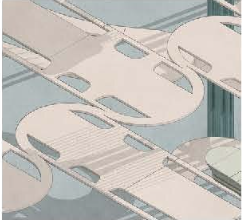
This is a digital detail 3 representing of the view of the normal human beings in the age of AI.
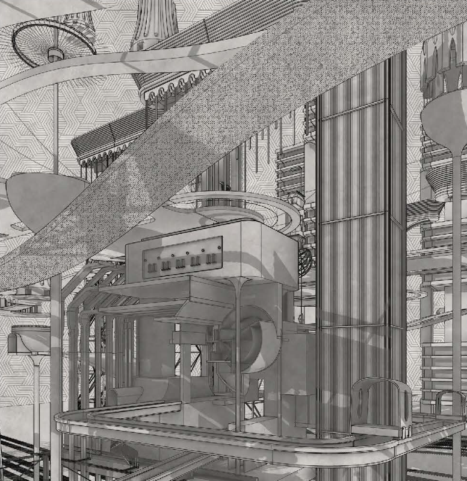
This is a representational drawing that examines the function of the elevators and the only usage is connecting people with different places in the park.
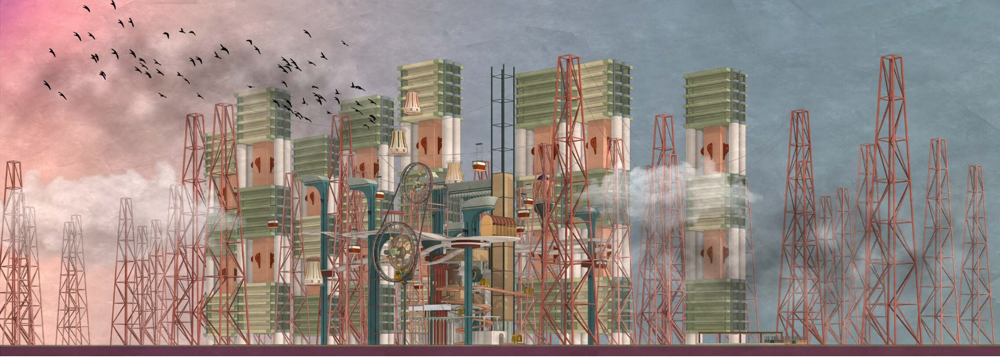
This is a representational drawing of what could be happening in the last day of the park.
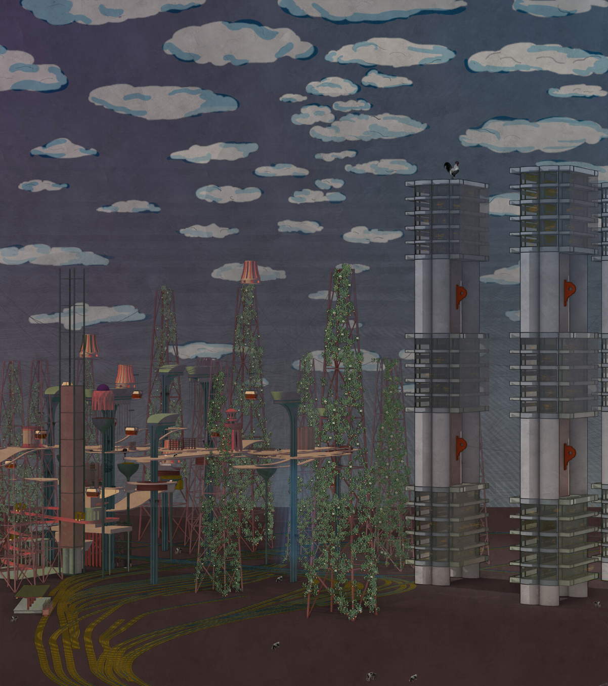
This is a representational drawing of the night view of the abandoned park.
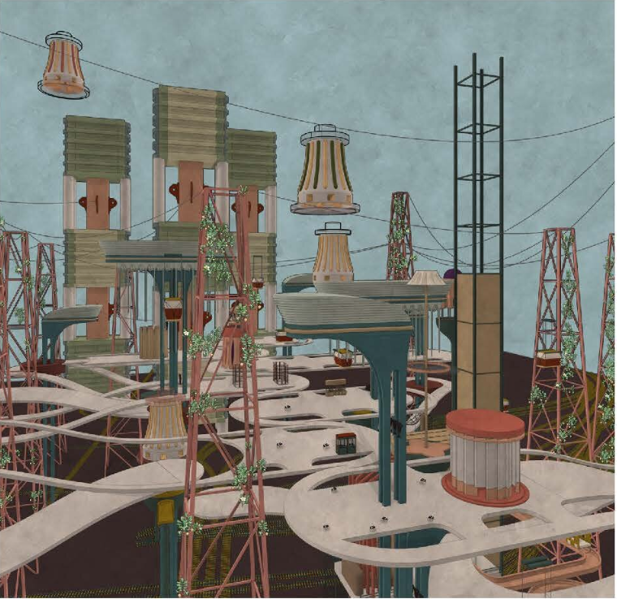
This is a representational drawing of the daylight view of the abandoned park.
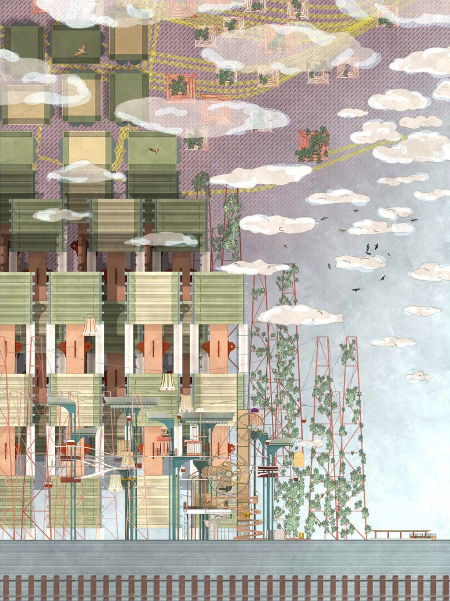
This is a representational drawing of a warpping world where people have no control over their lifes.